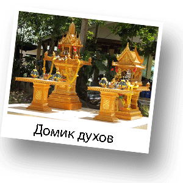
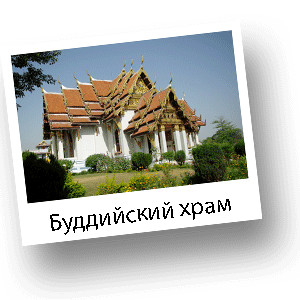
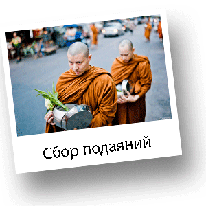
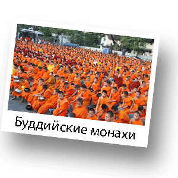

Религия Таиланда
На сегодняшний день практически все население в Таиланде – буддисты. Тайский образ жизни основывается на буддизме. Однако есть обряды, которые проводятся с элементами древних индуистских ритуалов. Например, обряды, связанные с рождением человека, брачные и погребальные церемонии. Самая главная основа всех религиозных обрядов - вера в необходимость умилостивления духов, которых тайцы называют "пхи". Культ духов в Таиланде строится на признании существования невидимых сверхъестественных существ, порой являющихся людям в виде призраков. Тайцы наделяют их способностью приносить как счастье и удачу, так и беды и неурядицы. Одними из самых могущественных и, потому самых почитаемых духов, считаются духи земли.
Поэтому в любом тайском частном владении должен быть установлен «домик для духов» – в знак благодарности за «позволение» хозяину данного участка земли использовать его под строительство дома. Именно поэтому почти у каждого здания в Таиланде можно увидеть маленькие домики, напоминающие богато разукрашенные скворечники. Это и есть домики для духов. Хозяева отелей, банков и самых разных контор, не говоря о простых обывателях, - все считают своим долгом обзавестись подобной деталью. В Таиланде существует множество заводов, которые специализируются на производстве домиков для духов. На рынке можно приобрести такое сооружение любого размера - от гигантского до микроскопического. Все зависит от пристрастий и финансовых возможностей покупателя.
Тайцы считают, что у человека тоже есть свой дух. Его зовут Кхуан. Его домиком является голова. Поэтому к чужой голове ни в коем случае нельзя прикасаться. Даже если это хорошо знакомый приятель или ребенок. Этим Вы проявляете неуважение к духу и тем самым наносите человеку смертельное оскорбление.
В тайской религии, в буддизме, есть много трактатов, проповедей и буддийских текстов. Самым популярным и доступным к пониманию является текст «Дхаммапада», что означает - «Путь закона». Есть четыре благородные истины для исповедующих буддизм, которые прописаны в текстах. «Путь закона» указывает на план действия для реализации четвертой истины, которая говорит, что есть способ избавления от любых страданий при жизни. Человеку, прежде всего, необходимо признать, что личность всецело определяется ее помыслами. Далее ему необходимо пройти три ступени существования: глупец, мудрец и просветленный (будда). Если понимание достигнуто, то можно следовать благородным восьмеричным путем, который приведет к «свободе за границами жизни и смерти» - нирване. Слово «нирвана» переводится, как угасший. В буддизме так называется состояние беспредельного покоя и отсутствия привязанности к вещам и, как следствие, отсутствия страданий.
При любом буддийском монастыре в Таиланде есть Устав, в котором 227 правил. В соответствии со значимостью правила разделены на 8 категорий.
Самыми важными являются первые 4 правила:
- Монах не должен вступать в сексуальный контакт ни с человеческим существом, ни с животным,
- Монах не должен брать вещи, которые ему не преподнесли,
- Монах не должен убивать живое существо,
- Монах не должен утверждать о наличии у него сверхъестественной силы, без должных на то оснований.
За их нарушение полагается немедленное исключение из общины.
Нарушение следующих 13 правил хотя и строго карается, но все же не подразумевает исключения. Часть этих правил направлена на ограничение контактов с женщинами.
Например, монаху запрещается не только держать женщину за руку или обнимать ее, но даже касаться, приближаться, вступать в сексуальный разговор и обсуждать с ней свои чувства, а также выступать посредником во взаимоотношениях между супругами. Есть правила, запрещающие заниматься бизнесом и использовать монастырские деньги на свои нужды без получения формального разрешения от других монахов. Запрещается создавать секты или поддерживать сектантов, а также провоцировать других монахов на нарушение Устава.
Оставшиеся, совсем уж маловажные правила, регулируют практически все аспекты монастырской жизни: отношения с другими монахами, отношение к мирянам, нормы этикета, монастырскую архитектуру. Существует запрет на прием пищи после 13.00, но он, вероятно, продиктован гигиеническими соображениями. Древние буддистские монахи питались тем, что им подавали во время утреннего обхода для сбора пожертвований. Холодильников у них не было, и они не могли долго хранить готовую еду. Однако, сами монахи нарушение этого правила на сегодняшний день серьезным проступком не считают.
В любом тайском монастыре с разрешения настоятеля можно бесплатно остановиться на одну ночь (только на одну).
При храмах существуют школы для мальчиков. Преподаватели такой школы обучают мальчиков основам письма и счета, но главным образом, в школе читают и заучивают буддийскую каноническую литературу, готовят учеников к временному монашеству. Считается, что каждый мужчина должен «во имя спасения души своей и своих родичей» провести некоторое время в монастыре. Период послушничества длится ограниченный срок – три месяца, три года, сезон или несколько дней. Пребывание в монастыре для мужчины считается чрезвычайно почетным делом. Не прошедший послушничества не считается полноправным мужчиной.
Каждое утро монахи обходят мирян, собирая подаяние. Практикуется распределение кварталов городов и улиц деревень между монахами местного монастыря или сбор подаяний по очереди. Монах отправляется в обход, сопровождаемый несколькими послушниками. Чаще всего, обход совершается молча. Собирающие подаяние не должны выходить из состояния сосредоточенности, выказывать гнев или неудовольствие по поводу подаяний. Все собранное – мучные изделия, овощи и фрукты – укладывается в чашу или на поднос и служит питанием всем монахам монастыря. Монахи едят два раза в день – утром и в полдень.
Помимо изучения священных книг, чтения молитв и т. п., монахи не уклоняются от занятий врачеванием с помощью «священной» воды, наговоров, «целебных» молитвенных заклинаний и снадобий. Они выступают также в роли предсказателей судьбы и составителей гороскопов.
Распорядок дня в монастырях, как в армии: монахи также подчиняются Уставу и не могут покидать территорию без серьезной причины. Им разрешается выходить за стены только для совершения религиозных церемоний или сбора подаяния, но не для того, чтобы бесцельно слоняться по улицам, посидеть в кафе или ресторане, поболтать с мирянами.
По Уставу самим монахам готовить нельзя. Это должны делать послушники или служки. Но в деревенских монастырях, где всего 1-2 монаха, они обслуживают себя сами. Более того, некоторые позволяют себе приготовить завтрак туристам, которые иногда неожиданно сваливаются им на бритую голову. Едят монахи, как правило, все вместе, сидя на циновках за низкими столиками, заставленными пожертвованным рисом, овощными, рыбными и мясными блюдами.
В отличие от Уставов христианских монашеских орденов, в которых работа не только разрешается, но и предписывается, буддистский Устав запрещает работать даже ради пропитания. Нельзя ремонтировать монастырь, обрабатывать землю, готовить пищу. Наведение порядка и сбор подаяния - единственные разрешенные виды физической активности. Ограничения доходят до того, что монахи не должны сами заваривать себе чай. Все это работа служек.
После завтрака послушники и ученики штудируют буддистские сутры. Монахи тоже могут уделить внимание изучению буддизма, но чаще всего в это время они гуляют по территории монастыря, разговаривают с посетителями или ложатся вздремнуть. Примерно с 11.00 до 13.00 - обед. Обычно едят то же, что и на завтрак (в остальное время только пьют - воду, сок, чай, кофе, какао). После обеда - сон.
Занятия в монастырской школе начинаются около 15.00. Раньше в XIX веке все дети, особенно деревенские, учились именно здесь. Ныне же, большинство детей посещает государственные школы, а в монастыри приходят только для получения дополнительных занятий. После того как ученики покинут обитель, монахи опять могут делать, что хотят. У них свободное время вплоть до вечерней молитвы. После молитвы - общий отбой в 21.00.
Современную монастырскую жизнь нельзя назвать трудной, а уж тем более аскетичной. Скорее, наоборот. В то время, как деревенские люди гнут спины на рисовых плантациях под палящим солнцем, монахи сидят на скамейках в прохладной тени. На первый взгляд, ситуация парадоксальная. Ведь в понимании европейца постриг означает отказ от мира и принятие аскетического образа жизни, а здесь монахи живут в материальном достатке и даже, по сравнению с большинством прихожан, в роскоши. У них есть мотоциклы, автомобили, мобильные телефоны, телевизоры, компьютеры, видеомагнитофоны и другая техника. Монашеские кельи не всегда соответствуют представлению о спартанском образе жизни. Так пожертвования, сделанные в знак уважения аскетизма и отрешенности от суетности мира, создают монахам комфортные условия для жизни уже здесь и сейчас.
В соответствии с учением Будды, к нирване можно пройти только следуя срединным путем. Поэтому не нужно заниматься самоистязанием, а надо стремиться к тому, чтобы не стать ни бедным, ни богатым.
Что касается отношения к женщинам, то монахами становятся для того, чтобы достичь незамутненного сознания. Основное препятствие на пути к этой цели – плотские желания. Поэтому степень угасания сексуального влечения у буддистов иногда применяется для оценки степени святости. Так, считается, что если сексуальное желание возникает не чаще нескольких раз в месяц, то монах достиг первой стадии святости, если один раз в месяц - второй, а если желание исчезает окончательно - монах становится почти архатом. Архат — это последняя ступень к становлению Будды, т.е. к полному пробуждению и просветлению.
С буддистской точки зрения сексуальная активность не только мешает накоплению духовной силы, но и ведет к ее полному исчезновению. Поэтому монахи должны строго соблюдать целибат (обет безбрачия, как правило, принятый по религиозным соображениям).
Некоторые моменты в соблюдении целибата, могут показаться абсурдными. Например: запрет спать под одной крышей с женщинами (даже с самками зверей), путешествовать в компании с женщиной, принимать что-либо непосредственно от представительниц слабого пола, касаться женской одежды, носить на руках маленьких девочек и обнимать самок животных. Запреты относятся ко всем женщинам без исключения, в том числе к матерям и сестрам. Например, если монах идет вместе с мамой, а она, вдруг, споткнется и упадет, то помочь женщине подняться должны присутствующие, а если рядом никого нет, монах может только протянуть маме полу робы или посох (но только не руку) и думать при этом, что тащит тяжелое бревно.
Большинство простых буддистов совсем не стремятся к нирване и выходу из цепи перерождений. Для них важнее обеспечить себе лучшее перерождение. В отличие от Будды, который считал страдание неизбежным свойством существования, современные буддисты рассматривают страдание, как временное состояние, и стремятся в будущей жизни родиться богачом в мире людей или попасть в мир божеств. Для улучшения кармы есть три средства: соблюдение заповедей, благотворительность и медитация. Кроме того, буддисты-миряне стараются соблюдать пять заповедей: не убей, не укради, не лги, не прелюбодействуй, не пей.
Иногда в буддистских монастырях Таиланда проходят праздники татуировки. Согласно буддийским верованиям, рисунки различных животных, которые делают местные монахи всем желающим, охраняют людей от сил зла и один день в году животные с татуировок вселяются в своих хозяев. Все татуировки создаются старым настоятелем храма, который, как здесь верят все без исключения, обладает магической силой.